Construir/Modificar un grafo
Añadir arcos a un grafo vacío:
# Un grafo dirigido vacío
g <- make_empty_graph(n = 0, directed = TRUE)
g
IGRAPH 8b42284 D— 0 0 –
+ edges from 8b42284:
g <- g + vertices(c("A","B","C"))
g
IGRAPH 5aee3a7 DN– 3 0 –
+ attr: name (v/c)
+ edges from 5aee3a7 (vertex names):
# Arcos: A to C , B to C
g <- g + edges(c("A","C", "B","C"))
g
IGRAPH 58e5268 DN– 3 2 –
+ attr: name (v/c)
+ edges from 58e5268 (vertex names):
[1] A->C B->C
# Eliminar arco A
g <- g - V(g)["A"]
g
IGRAPH 8a68774 DN– 2 1 –
+ attr: name (v/c)
+ edge from 8a68774 (vertex names):
[1] B->C
# Eliminará todos los arcos conectados con A
Lista de arcos: graph() and get.edgelist():
# Un grafo dirigido vacío
# graph() id desde 1.
g1 <- graph( c(1,2, 1,3, 2,3, 3,4 ));g1
IGRAPH 1cd7bb1 D— 4 4 –
+ edges from 1cd7bb1:
[1] 1->2 1->3 2->3 3->4
IGRAPH 1cd7bb1 D— 4 4 –

# El parámetro "directed" a FALSE para
# grafos no dirigidos.
g2 <- graph( c(1,2, 1,3, 2,3, 3,4 , 3, 5, 1, 3), directed=FALSE); g2
IGRAPH 69954db U— 5 6 –
+ edges from 69954db:
[1] 1–2 1–3 2–3 3–4 3–5 1–3
IGRAPH 69954db U— 5 6 –

#Obtener la lista de arcos a partir de un grafo
edgelist<-get.edgelist(g2) ; edgelist
[,1] [,2]
[1,] 1 2
[2,] 1 3
[3,] 2 3
[4,] 3 4
[5,] 3 5
[6,] 1 3
edgelist <- as_edgelist(g2) ; edgelist
[,1] [,2]
[1,] 1 2
[2,] 1 3
[3,] 2 3
[4,] 3 4
[5,] 3 5
[6,] 1 3
# Obtener el grafo a partir de la lista de arcos
g3<-graph( t(edgelist)); g3; plot(g3)
IGRAPH e5db6d8 D— 5 6 –
+ edges from e5db6d8:
[1] 1->2 1->3 2->3 3->4 3->5 1->3

g3<-graph( edgelist); g3; plot(g3)
IGRAPH 6a2e98e D— 5 6 –
+ edges from 6a2e98e:
[1] 1->1 2->3 3->1 2->3 3->4 5->3

# algunos parámetros de plot
plot(g3,
vertex.color="green",
edge.arrow.size=0.5,
vertex.size=25,
edge.curved=0.5,
layout_as_star=TRUE)
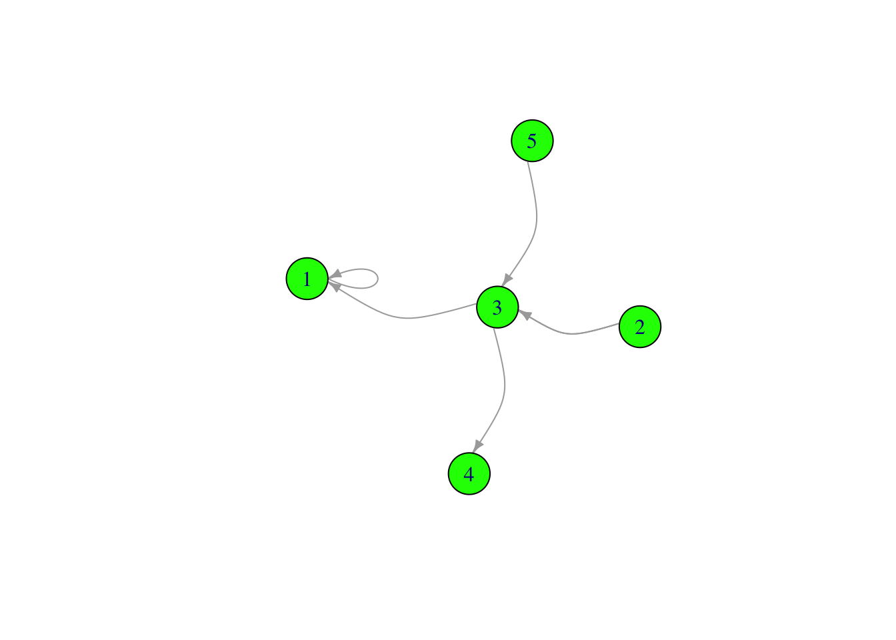
Matrices de adyacencia: graph.adjacency(), get.adjacency()
adjm_u<-matrix(
c(0, 1, 0, 0, 1, 0,
1, 0, 1, 0, 1, 0,
0, 1, 0, 1, 0, 0,
0, 0, 1, 0, 1, 1,
1, 1, 0, 1, 0, 0,
0, 0, 0, 1, 0, 0),
nrow=6,
ncol=6,
byrow = TRUE)
#grafo a partir de matriz de adyacencia
g_adj_u <- graph.adjacency(adjm_u, mode="undirected")
plot(g_adj_u)
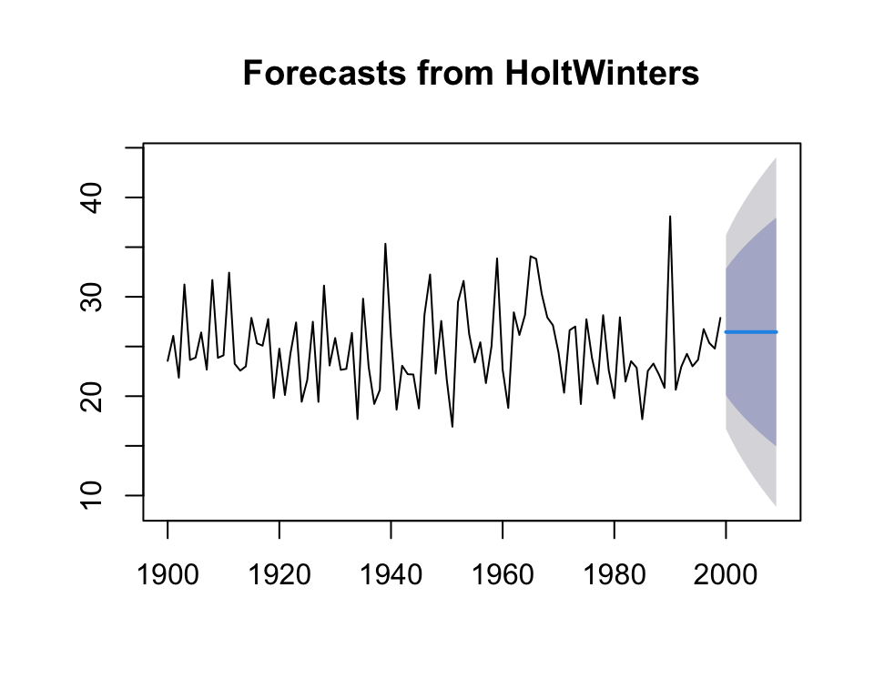
# Matriz de adyacencia a partir de grafo
A <- get.adjacency(g_adj_u); A
6 x 6 sparse Matrix of class “dgCMatrix”
[1,] . 1 . . 1 .
[2,] 1 . 1 . 1 .
[3,] . 1 . 1 . .
[4,] . . 1 . 1 1
[5,] 1 1 . 1 . .
[6,] . . . 1 . .
A <- as_adjacency_matrix(g_adj_u, sparse = FALSE)
A
[,1] [,2] [,3] [,4] [,5] [,6]
[1,] 0 1 0 0 1 0
[2,] 1 0 1 0 1 0
[3,] 0 1 0 1 0 0
[4,] 0 0 1 0 1 1
[5,] 1 1 0 1 0 0
[6,] 0 0 0 1 0 0
Grafo a partir de data frame
# Primero, crear el data frame
node1 = c("Ella", "Tu", "El"); node2 = c("El", "Ella", "Tu")
weight = c(10, -2, 3)
df = data.frame(node1, node2, weight); df
node1 node2 weight
1 Ella El 10
2 Tu Ella -2
3 El Tu 3
# Crear el grafo
g <- graph.data.frame(df, directed=FALSE); g
IGRAPH 517f339 UNW- 3 3 –
+ attr: name (v/c), weight (e/n)
+ edges from 517f339 (vertex names):
[1] Ella–El Ella–Tu Tu –El
# Si se conocen los vértices
# g <- graph.data.frame(df, vertices=listvertices, directed=FALSE);g
# Obtener los nombres de los nodos
V(g)$name
[1] “Ella” “Tu” “El”
# Obtener los pesos de los arcos
E(g)$weight
[1] 10 -2 3
Grafo a partir de literales
#?graph_from_literal
g <- graph_from_literal(A--C, A-+D, C-+A, , D-+C)
g
IGRAPH b43d93a DN– 4 3 –
+ attr: name (v/c)
+ edges from b43d93a (vertex names):
[1] A->D C->A D->C

#IGRAPH DN-- 4 4 --
#+ attr: name (v/c)
#+ edges (vertex names):
#[1] A->D D->C D->B B->A
G3 <-graph_from_literal(A-B, B -+C)
plot(G3)
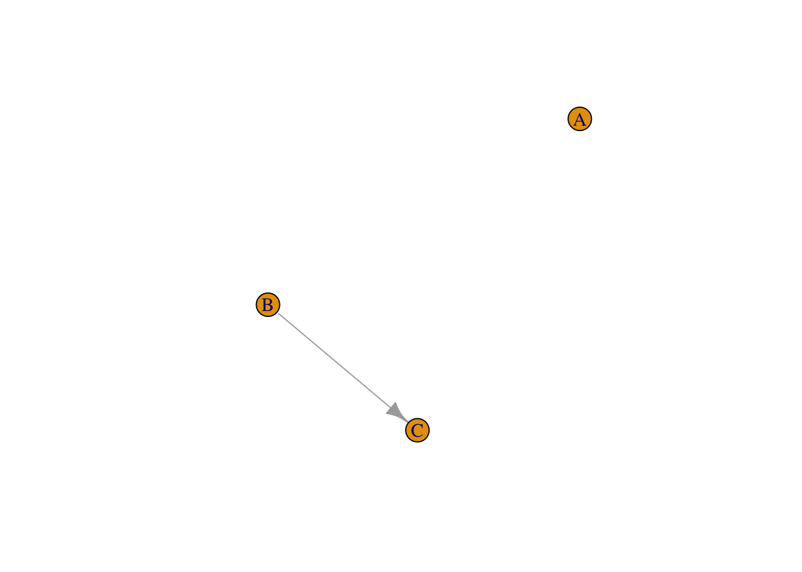
G3 <-graph_from_literal(A-B, B -C)
plot(G3)
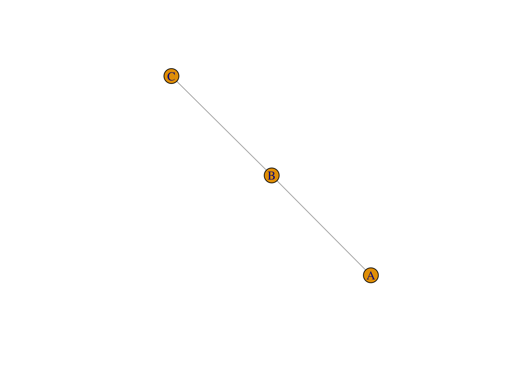
grafo aleatorio
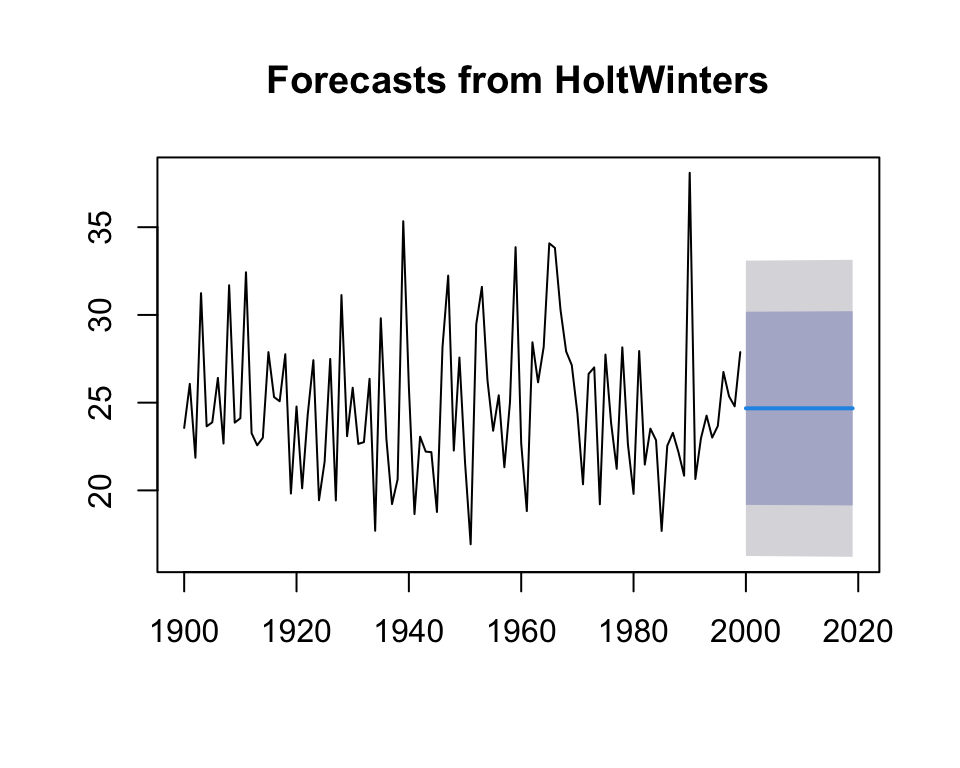
Visualización
Buscar ayuda de los comandos plot.igraph, igraph.plotting.
A continuación dibujamos algunos grafos interesantes:
#library(igraph)
# Trees
g <- make_tree(27, children=3)
g; plot(g)
IGRAPH 05e3994 D— 27 26 – Tree
+ attr: name (g/c), children (g/n), mode (g/c)
+ edges from 05e3994:
[1] 1-> 2 1-> 3 1-> 4 2-> 5 2-> 6 2-> 7 3-> 8 3-> 9 3->10 4->11 4->12 4->13
[13] 5->14 5->15 5->16 6->17 6->18 6->19 7->20 7->21 7->22 8->23 8->24 8->25
[25] 9->26 9->27

# Cliques
g <- make_full_graph(n=6)
g; plot(g)
IGRAPH 376a565 U— 6 15 – Full graph
+ attr: name (g/c), loops (g/l)
+ edges from 376a565:
[1] 1–2 1–3 1–4 1–5 1–6 2–3 2–4 2–5 2–6 3–4 3–5 3–6 4–5 4–6 5–6
# Lattices
g <- make_lattice(dimvector = c(5,5), circular = FALSE)
V(g)$label <- NA
g; plot(g)
IGRAPH 5c8affb U— 25 40 – Lattice graph
+ attr: name (g/c), dimvector (g/n), nei (g/n), mutual (g/l), circular
| (g/l), label (v/l)
+ edges from 5c8affb:
[1] 1– 2 1– 6 2– 3 2– 7 3– 4 3– 8 4– 5 4– 9 5–10 6– 7
[11] 6–11 7– 8 7–12 8– 9 8–13 9–10 9–14 10–15 11–12 11–16
[21] 12–13 12–17 13–14 13–18 14–15 14–19 15–20 16–17 16–21 17–18
[31] 17–22 18–19 18–23 19–20 19–24 20–25 21–22 22–23 23–24 24–25

#Stars
g <- make_star(n=10,mode = "undirected")
g; plot(g)
IGRAPH c9f930e U— 10 9 – Star
+ attr: name (g/c), mode (g/c), center (g/n)
+ edges from c9f930e:
[1] 1– 2 1– 3 1– 4 1– 5 1– 6 1– 7 1– 8 1– 9 1–10
Anillo con conexiones cruzadas:
g <- make_ring(10, directed=TRUE, mutual=TRUE)
V(g)$name <- LETTERS[1:10]
g <- g + edges(9,5, 7,1, 1,5)
plot(g)
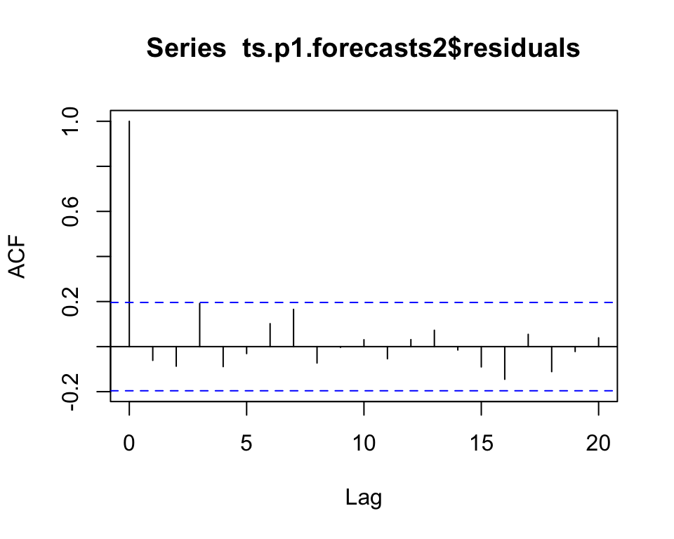
Layouts
Un layout es un conjunto de coordenadas x,y preestablecidas. Se pueden especificar manualmente o usando layout_functions
Determina la posición de los nodos en la red. Hay layouts ya diseñados o puedes diseñarlo desde 0.
Intentar minimizar cruces de arcos.
Algoritmos que lo consiguen: por ejemplo - Kamada Kawai algorithm, the Fruchterman Reingold algorithm, etc.
Lykamada <- layout.kamada.kawai(g)
plot(g, layout=Lykamada)
Lyfruchtermant <- layout.fruchterman.reingold(g)
plot(g, layout=Lyfruchtermant)
lo <- layout_in_circle(g)
head(lo, n=4)
[,1] [,2]
[1,] 1.000000 0.0000000
[2,] 0.809017 0.5877853
[3,] 0.309017 0.9510565
[4,] -0.309017 0.9510565
# lo es una matriz de coordenadas
lo
[,1] [,2]
[1,] 1.000000 0.000000e+00
[2,] 0.809017 5.877853e-01
[3,] 0.309017 9.510565e-01
[4,] -0.309017 9.510565e-01
[5,] -0.809017 5.877853e-01
[6,] -1.000000 1.224647e-16
[7,] -0.809017 -5.877853e-01
[8,] -0.309017 -9.510565e-01
[9,] 0.309017 -9.510565e-01
[10,] 0.809017 -5.877853e-01

# See ?layout_ for a full list
# Para redes tipo árbol: layout_as_tree
gTree <- make_tree(15)
plot(gTree, layout=layout_as_tree(gTree, root = 1))
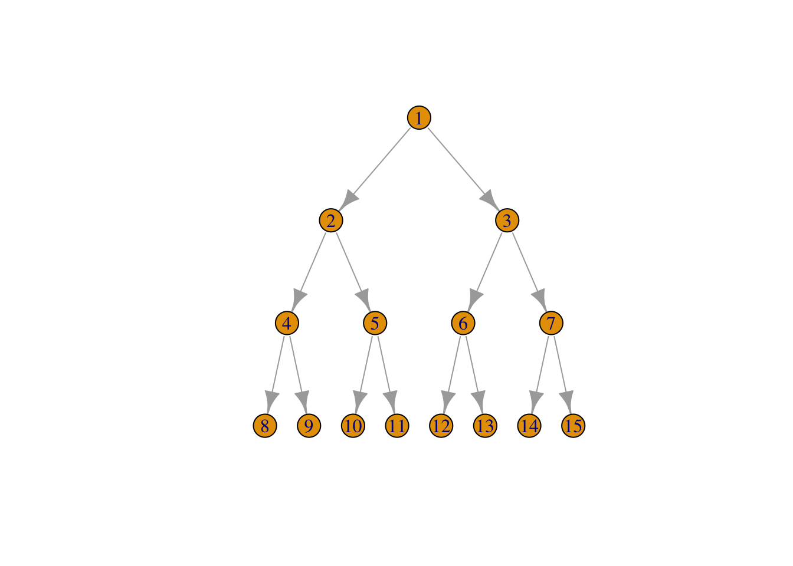
# layout como un grid
plot(g, layout=layout_on_grid(g))

Mallas:

Dibujar grafos ponderados
Ejemplos - plantillas
Plot vocales como rectángulos
g <- make_ring(10, directed=TRUE, mutual=TRUE)
V(g)$name <- LETTERS[1:10]
g <- g + edges(9,5, 7,1, 1,5)
plot(g)

vowel <- V(g)$name %in% c("A","E","I","O","U") + 1 # gives 1 or 2
plot(g, layout=lo, vertex.shape=c("circle", "square")[vowel])

#colores
plot(g, layout=lo, vertex.color=c("tomato2", "royalblue")[vowel])

#tamaño
plot(g, layout=lo, vertex.size=c(15,30)[vowel])
#Propiedades usando atributos
V(g)$shape <- "circle" # Aplicado a todos los vértices
V(g)$size <- 15
V(g)$color <- "orange"
isVowel <- V(g)$name %in% c("A","E","I","O","U")
# Sobreescribir los nodos vocales
V(g)[isVowel]$shape <- "square"
V(g)[isVowel]$color <- "royalblue"
V(g)[isVowel]$size <- 25
plot(g, layout=lo)

Propiedades de los arcos
E(g)$width <- 1
v1 <-V(g)[isVowel]
v1
- 3/10 vertices, named, from 912d38e:
[1] A E I
E(g)[v1 %--% v1]$width <- 4
# Ver http://igraph.org/r/doc/igraph-es-indexing.html
plot(g, layout=lo)

#Arcos curvados
plot(g, layout=lo, edge.curved=0.3*which_mutual(g))
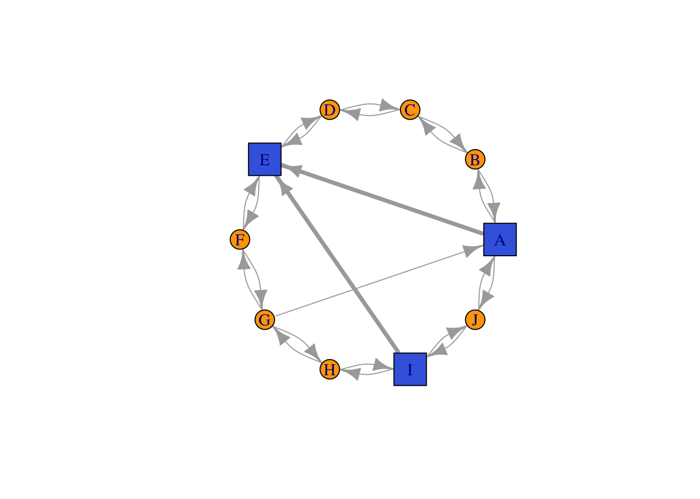
Agrupaciones por índices:
groupList <- list(vowelGroup = which(isVowel),
constGroup1 = c(2,3,4),
constGroup2 = c(6,7,8))
groupColours <- c(rgb(0,0.3,1,0.5),
rgb(0.8,0.4,0.1,0.5),
rgb(0.8,0.4,0.1,0.5))
plot(g, layout=layout_with_fr, # Fruchterman?Reingold layout
mark.groups=groupList, # Mark the groups
mark.col= groupColours,
# Eliminar el borde
mark.border = NA,
edge.curved=0.1*which_mutual(g))
text(0.45,0.1,"Vocales", cex=1.5)
text(0.5,0.9,"Grupo consonantes 1", cex=1.5)
text(-0.8,-1,"Grupo consonantes 2", cex=1.5)

Capítulo 5 Social Network Analysis
Disciplina con base sólida de Matemática Aplicada: Teoría de Grafos y Matemática Discreta.
Unida con Álgebra Lineal: las bases de Pagerank (algoritmo de Google) The Mathematics of Google Search.
Describir las relaciones entre los elementos de una red y extraer conocimiento acerca de las estructuras sociales que existen en esa red. Tópico de enorme interés para extraer conocimiento de redes sociales en cualquier área.
Existen muy destacadas aplicaciones para SNA:
Gephi
https://gephi.org
https://gephi.org/tutorials/gephi-tutorial-quick_start.pdf
Cytoscape
https://cytoscape.org
5.1 R for SNA
Usaremos el paquete igraph. Nos servirá para analizar más adelante datos extraído de Twiter.
Ventajas de usar R:
Reproducible research no es posible con las aplicaciones GUI.
Herramientas sólidas para manipular los datos.
Cada vez más paquetes diseñados para hacer de R una herramienta completa de análisis de redes.
Paquetes statnet y igraph.
Thomas Lin Pedersen ha publicado los paquetes tidygraph y ggraph, que aprovechan la potencia de igraph de forma coherente con el flujo de trabajo de tidyverse.
Crear gráficos de red interactivos con el marco htmlwidgets que traduce el código de R a JavaScript.
5.1.1 Elementos de una red
[1] “Tom Hanks” “Gary Sinise” “Bill Paxton” “Kevin Bacon” “Ed Harris”
[6] “Sean Connery” “Robin Wright” “Nicolas Cage”
arcos o enlaces (edges, links)
[,1] [,2]
[1,] “Tom Hanks” “Gary Sinise” [2,] “Tom Hanks” “Robin Wright” [3,] “Gary Sinise” “Robin Wright” [4,] “Tom Hanks” “Gary Sinise” [5,] “Tom Hanks” “Bill Paxton” [6,] “Tom Hanks” “Kevin Bacon” [7,] “Tom Hanks” “Ed Harris”
[8,] “Gary Sinise” “Bill Paxton” [9,] “Gary Sinise” “Kevin Bacon” [10,] “Gary Sinise” “Ed Harris”
[11,] “Bill Paxton” “Kevin Bacon” [12,] “Bill Paxton” “Ed Harris”
[13,] “Kevin Bacon” “Ed Harris”
[14,] “Ed Harris” “Sean Connery” [15,] “Ed Harris” “Nicolas Cage” [16,] “Sean Connery” “Nicolas Cage”
Nodos y arcos pueden contender atributos adicionales con importante información:
[1] “Forest Gump” “Forest Gump” “Forest Gump” “Apollo 13” “Apollo 13”
[6] “Apollo 13” “Apollo 13” “Apollo 13” “Apollo 13” “Apollo 13”
[11] “Apollo 13” “Apollo 13” “Apollo 13” “The Rock” “The Rock”
[16] “The Rock”
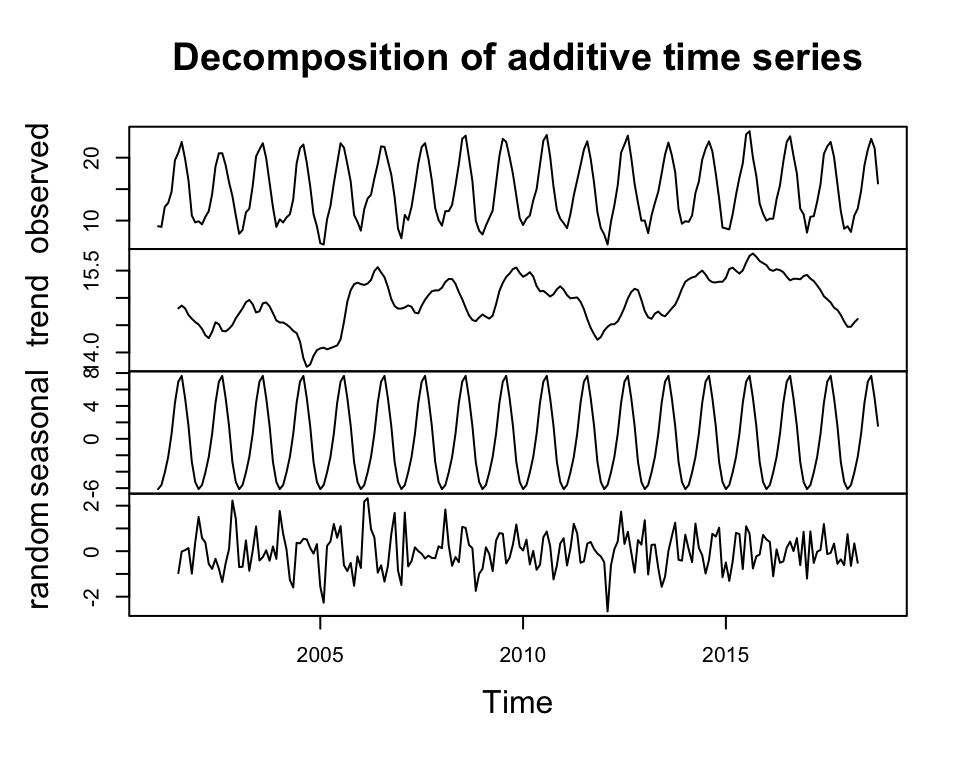
5.1.2 Representación de redes
5.1.2.1 Grafos como listas de arcos
data.frame o matriz (si los datos del mismo tipo) que contiene dos columnas:
Si el sentido es importante, la red se denomina dirigida, en otro caso, no dirigida.
integrante1 integrante2 1 Luis Juan 2 Ana Jose 3 Fran Amalia 4 Pedro Lucía 5 Laura Maite 6 Susana Eduardo
‘data.frame’: 6 obs. of 2 variables: $ integrante1: chr “Luis” “Ana” “Fran” “Pedro” … $ integrante2: chr “Juan” “Jose” “Amalia” “Lucía” …
5.1.2.2 Grafos como matrices
A B C A 0 1 0 B 1 0 1 C 1 0 0
num [1:3, 1:3] 0 1 1 1 0 0 0 1 0 - attr(*, “dimnames”)=List of 2 ..$ : chr [1:3] “A” “B” “C” ..$ : chr [1:3] “A” “B” “C”
A B C A 1 0 1 B 1 1 0 C 0 1 0
A B C A 1 1 0 B 1 1 1 C 1 0 1
[1,] “A” “B” [2,] “B” “A” [3,] “B” “C” [4,] “C” “A”
5.2
igraph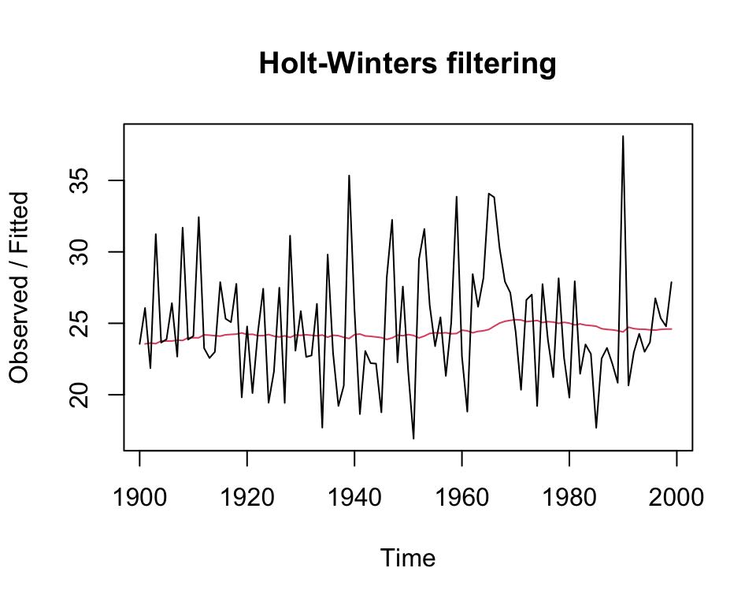
5.2.1 Acceder a elementos de grado
5.2.2 Construir/Modificar un grafo
IGRAPH 8b42284 D— 0 0 – + edges from 8b42284:
IGRAPH 5aee3a7 DN– 3 0 – + attr: name (v/c) + edges from 5aee3a7 (vertex names):
IGRAPH 58e5268 DN– 3 2 – + attr: name (v/c) + edges from 58e5268 (vertex names): [1] A->C B->C
IGRAPH 8a68774 DN– 2 1 – + attr: name (v/c) + edge from 8a68774 (vertex names): [1] B->C
IGRAPH 1cd7bb1 D— 4 4 – + edges from 1cd7bb1: [1] 1->2 1->3 2->3 3->4
IGRAPH 1cd7bb1 D— 4 4 –
IGRAPH 69954db U— 5 6 – + edges from 69954db: [1] 1–2 1–3 2–3 3–4 3–5 1–3
IGRAPH 69954db U— 5 6 –
[1,] 1 2 [2,] 1 3 [3,] 2 3 [4,] 3 4 [5,] 3 5 [6,] 1 3
[1,] 1 2 [2,] 1 3 [3,] 2 3 [4,] 3 4 [5,] 3 5 [6,] 1 3
IGRAPH e5db6d8 D— 5 6 – + edges from e5db6d8: [1] 1->2 1->3 2->3 3->4 3->5 1->3
IGRAPH 6a2e98e D— 5 6 – + edges from 6a2e98e: [1] 1->1 2->3 3->1 2->3 3->4 5->3
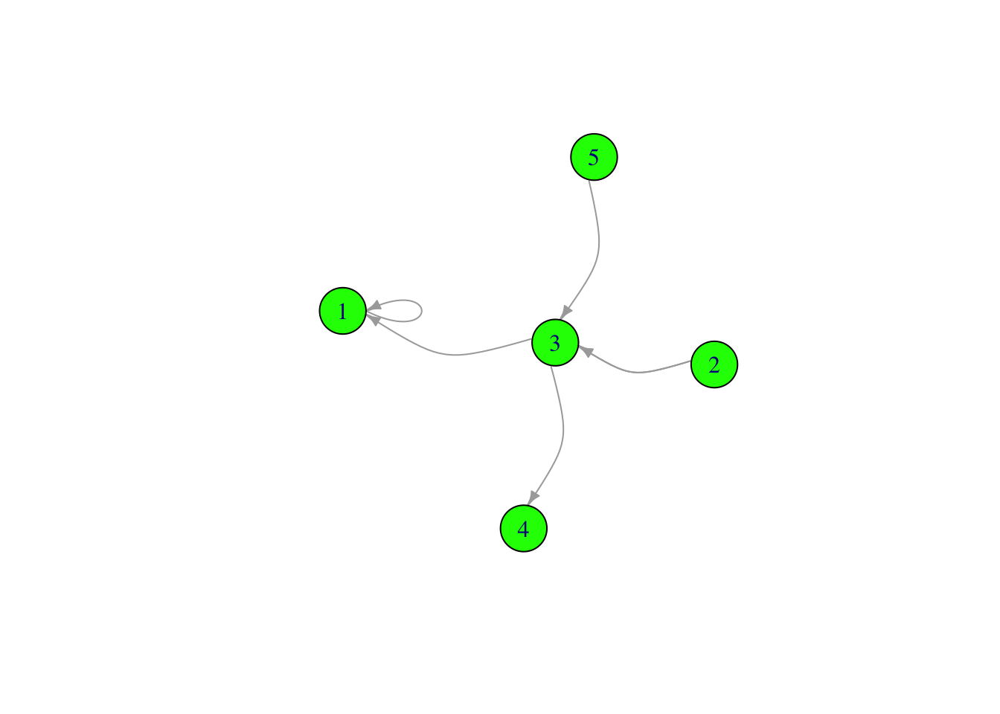
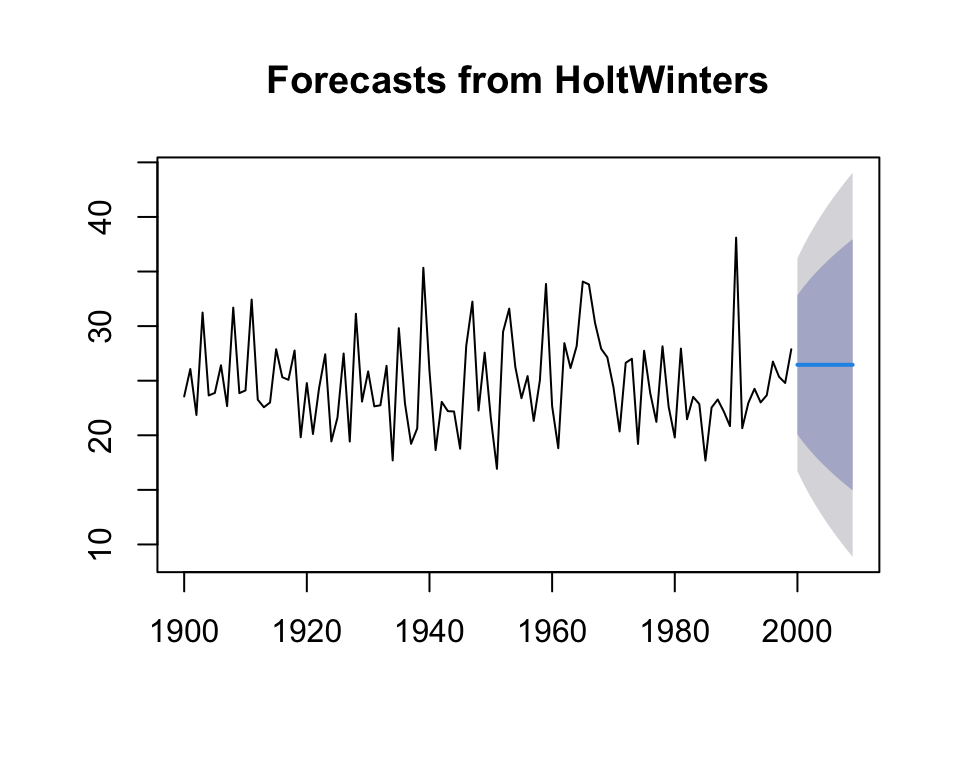
6 x 6 sparse Matrix of class “dgCMatrix”
[1,] . 1 . . 1 . [2,] 1 . 1 . 1 . [3,] . 1 . 1 . . [4,] . . 1 . 1 1 [5,] 1 1 . 1 . . [6,] . . . 1 . .
[1,] 0 1 0 0 1 0 [2,] 1 0 1 0 1 0 [3,] 0 1 0 1 0 0 [4,] 0 0 1 0 1 1 [5,] 1 1 0 1 0 0 [6,] 0 0 0 1 0 0
node1 node2 weight 1 Ella El 10 2 Tu Ella -2 3 El Tu 3
IGRAPH 517f339 UNW- 3 3 – + attr: name (v/c), weight (e/n) + edges from 517f339 (vertex names): [1] Ella–El Ella–Tu Tu –El
[1] “Ella” “Tu” “El”
[1] 10 -2 3
IGRAPH b43d93a DN– 4 3 – + attr: name (v/c) + edges from b43d93a (vertex names): [1] A->D C->A D->C
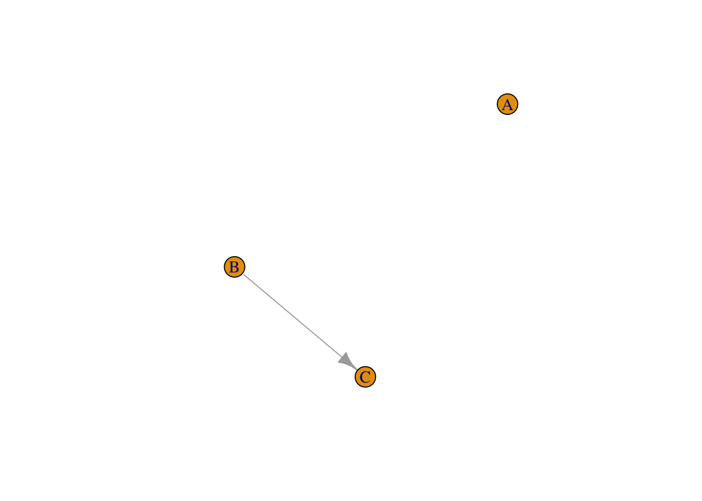
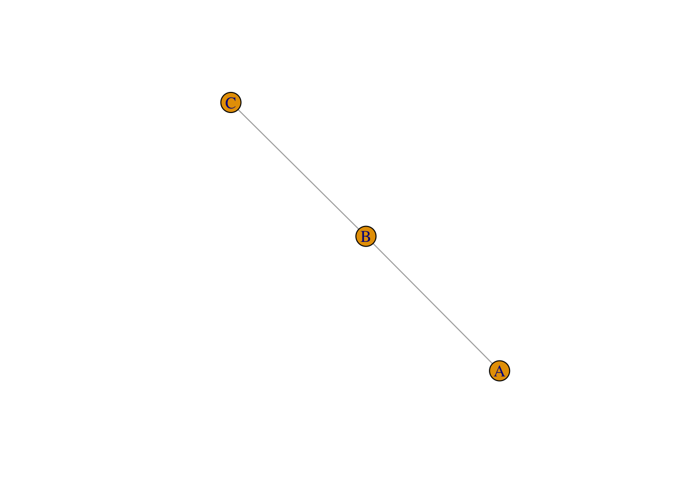
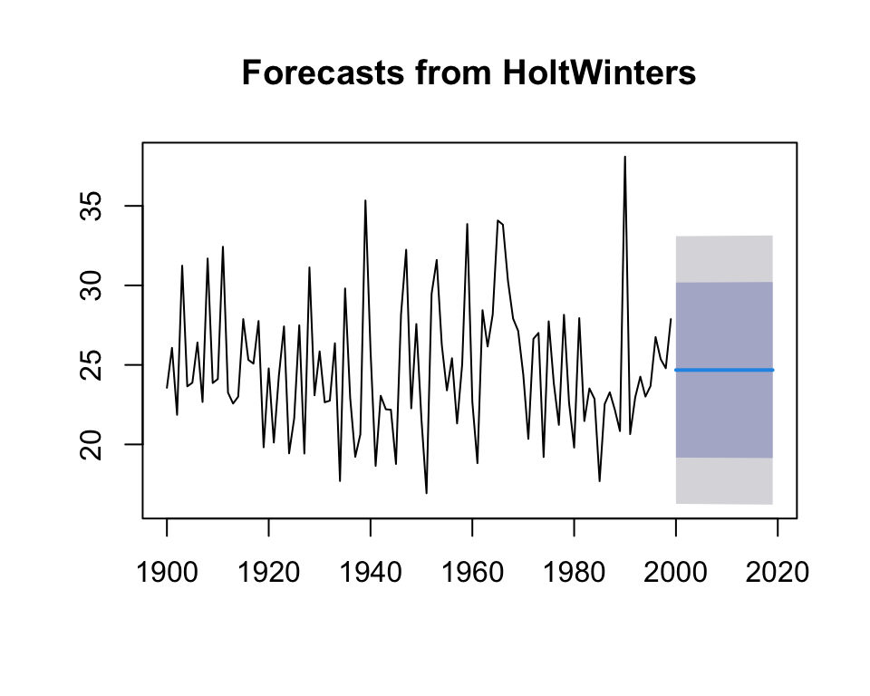
5.2.3 Visualización
Buscar ayuda de los comandos plot.igraph, igraph.plotting.
A continuación dibujamos algunos grafos interesantes:
IGRAPH 05e3994 D— 27 26 – Tree + attr: name (g/c), children (g/n), mode (g/c) + edges from 05e3994: [1] 1-> 2 1-> 3 1-> 4 2-> 5 2-> 6 2-> 7 3-> 8 3-> 9 3->10 4->11 4->12 4->13 [13] 5->14 5->15 5->16 6->17 6->18 6->19 7->20 7->21 7->22 8->23 8->24 8->25 [25] 9->26 9->27
IGRAPH 376a565 U— 6 15 – Full graph + attr: name (g/c), loops (g/l) + edges from 376a565: [1] 1–2 1–3 1–4 1–5 1–6 2–3 2–4 2–5 2–6 3–4 3–5 3–6 4–5 4–6 5–6
IGRAPH 5c8affb U— 25 40 – Lattice graph + attr: name (g/c), dimvector (g/n), nei (g/n), mutual (g/l), circular | (g/l), label (v/l) + edges from 5c8affb: [1] 1– 2 1– 6 2– 3 2– 7 3– 4 3– 8 4– 5 4– 9 5–10 6– 7 [11] 6–11 7– 8 7–12 8– 9 8–13 9–10 9–14 10–15 11–12 11–16 [21] 12–13 12–17 13–14 13–18 14–15 14–19 15–20 16–17 16–21 17–18 [31] 17–22 18–19 18–23 19–20 19–24 20–25 21–22 22–23 23–24 24–25
IGRAPH c9f930e U— 10 9 – Star + attr: name (g/c), mode (g/c), center (g/n) + edges from c9f930e: [1] 1– 2 1– 3 1– 4 1– 5 1– 6 1– 7 1– 8 1– 9 1–10
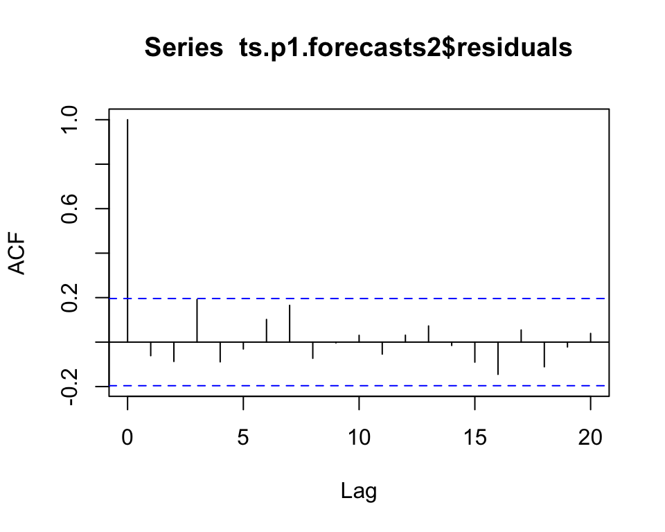
5.2.3.1 Layouts
Un layout es un conjunto de coordenadas x,y preestablecidas. Se pueden especificar manualmente o usando layout_functions
[1,] 1.000000 0.0000000 [2,] 0.809017 0.5877853 [3,] 0.309017 0.9510565 [4,] -0.309017 0.9510565
[1,] 1.000000 0.000000e+00 [2,] 0.809017 5.877853e-01 [3,] 0.309017 9.510565e-01 [4,] -0.309017 9.510565e-01 [5,] -0.809017 5.877853e-01 [6,] -1.000000 1.224647e-16 [7,] -0.809017 -5.877853e-01 [8,] -0.309017 -9.510565e-01 [9,] 0.309017 -9.510565e-01 [10,] 0.809017 -5.877853e-01
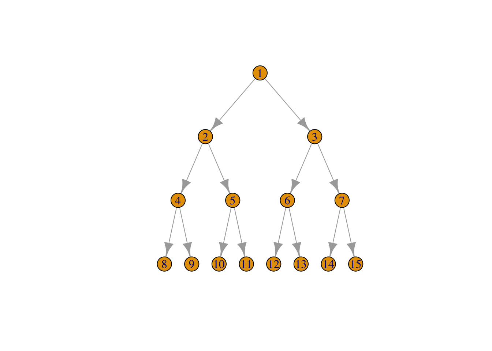
Mallas:
5.2.3.2 Dibujar grafos ponderados
5.2.3.3 Cambiar aspecto y propiedades de un grafo
Note: colores en R http://www.stat.columbia.edu/~tzheng/files/Rcolor.pdf
5.2.3.4 Ejemplos - plantillas
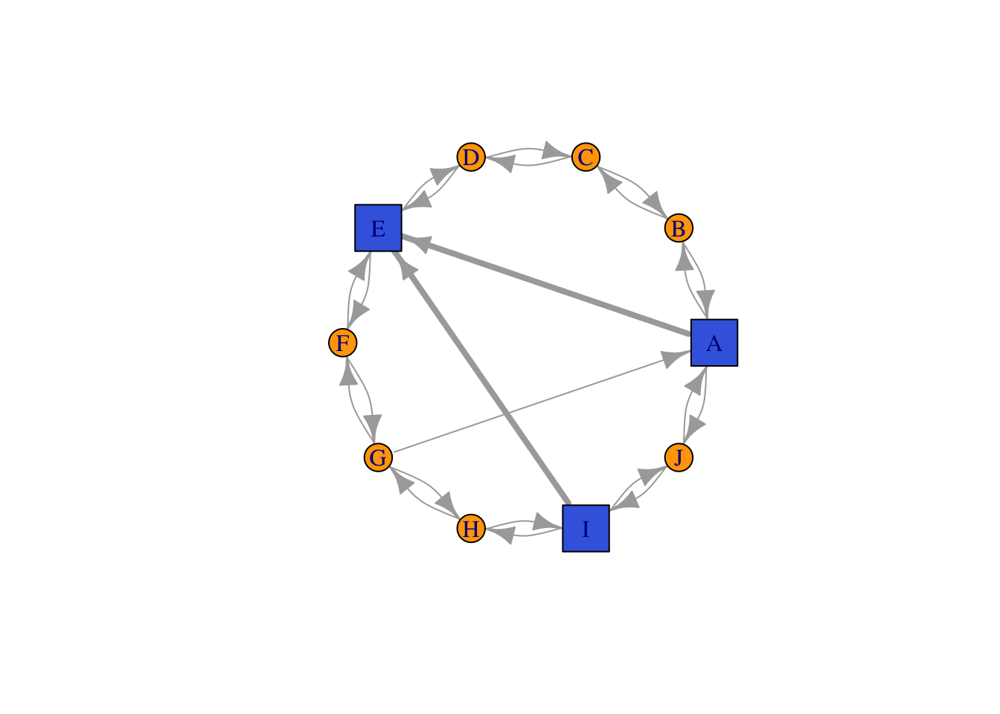
5.2.4 Exportar grafos
igraph permite importar y exportar de/desde un considerable número de formatos. Se usan los comandos read_graph y write_graph. Un formato abierto (open) es graphml.
Otros formatos:
edgelist: Fichero de texto con arcos en cada línea.
pajek: Pajek es un programa popular en Windows para análisis de redes.
gml: Graph Modelling Language es uno de los formatos abiertos más populares.
graphml: Graph Markup Language es un formato abierto basado en XML.
dot: Formato usado por GraphViz.
** Gephi: Para exportar al formato nativo GEXF de Gephise usa el paquete rgexf al que puede convertirse desde un objeto igraph **
Referencias:
5.3 Analysis of the Networks to extract knowledge.
http://snap.stanford.edu/class/cs224w-2015/slides/06-applicationsI.pdf
Locate people in the network for…
https://medium.com/applied-data-science/the-google-vs-trick-618c8fd5359f
http://olizardo.bol.ucla.edu/classes/soc-111/lessons-winter-2022/5-lesson-egonet-metrics.html
Vamos a usar este grafo como ejemplo de las medidas de bondad del grafo.
IGRAPH 7744133 D— 10 14 – + edges from 7744133: [1] 1-> 2 1-> 3 2-> 3 3-> 4 3-> 5 1-> 5 4-> 2 3-> 6 4-> 8 8-> 1 [11] 9-> 1 10-> 2 7-> 6 5->10 IGRAPH 7744133 D— 10 14 –
Vértices, arcos.
[1] “igraph” + 10/10 vertices, from 7744133: [1] 1 2 3 4 5 6 7 8 9 10 + 1/10 vertex, from 7744133: [1] 1 + 14/14 edges from 7744133: [1] 1-> 2 1-> 3 2-> 3 3-> 4 3-> 5 1-> 5 4-> 2 3-> 6 4-> 8 8-> 1 [11] 9-> 1 10-> 2 7-> 6 5->10 + 1/14 edge from 7744133: [1] 1->2 [1] “igraph.vs” [1] “igraph.es”
## Medidas de bondad, calidad de grafo
5.3.1 Centrality
Importancia de los nodos en un grafo.
5.3.2 Degree
Número de arcos conectados a un vértice. Señala la importancia de un vértice o el nivel de actividad del vértice en la red.
Cómo de central es un nodo en la red
Cuántos arcos de entrada-salida tiene o con cuántos nodos se conecta directamente via un arco.
IGRAPH 7744133 D— 10 14 – + edges from 7744133: [1] 1-> 2 1-> 3 2-> 3 3-> 4 3-> 5 1-> 5 4-> 2 3-> 6 4-> 8 8-> 1 [11] 9-> 1 10-> 2 7-> 6 5->10 [1] 5 4 5 3 3 2 1 2 1 2
[1] 2 3 2 1 2 2 0 1 0 1
[1] 3 1 3 2 1 0 1 1 1 1
$res
[1] 5 4 5 3 3 2 1 2 1 2
[1] 5 4 5 3 3 2 1 2 1 2
[1] 2 3 2 1 2 2 0 1 0 1
[1] 3 1 3 2 1 0 1 1 1 1
$res
[1] 5 4 5 3 3 2 1 2 1 2
$centralization [1] 0.1358025
$theoretical_max [1] 162
5.3.3 Betweenness
Mide el grado en el que la información fluye a través de un vértice particular y su importancia relativa como un intermediario en la red.
Describe nodos que son conexiones clave o puentes entre grupos de nodos.
[1] 14 14 25 11 6 0 0 6 0 6
5.3.4 Edge_betweenness
Similar al anterior pero teniendo en cuenta cada arco.
5.3.5 Closeness
Distancia a otros nodos. Un nodo con valor alto de este estimador es más central y puede difundir la información a muchos otros nodos.
Se obtiene como 1 divido por la suma de las distancias geodésicas desde un vértice al resto. Alcanzará su valor máximo cuando un vértice esté conectado a todos los demás. Longitud media de los caminos más cortos (geodésicos).
Mide cuantos pasos se requieren desde un vértice para alcanzar el resto de vértices de la red.
Caminos cortos entre vértices señalan que estos están cercanos unos a otros.
[1] 0.08333333 0.05882353 0.08333333 0.06250000 0.04000000 NaN [7] 1.00000000 0.06250000 0.05000000 0.04761905
5.3.6 Eigenvector
No todas las conexiones tienen la misma importancia - medida de la importancia de un nodo.
La medida Eigenvector Centrality se calcula como el autovalor de mayor módulo de la matriz de adyacencia que contiene los pesos.
a high score to vertices that either have a lot of connections, or are connected to someone with a lot of connections
$vector [1] 0.94446858 0.87756472 1.00000000 0.67054129 0.68544140 0.31214483 [7] 0.08943566 0.46273222 0.27060890 0.44783212
$value [1] 3.490161
$options \(options\)bmat [1] “I”
\(options\)n [1] 10
\(options\)which [1] “LA”
\(options\)nev [1] 1
\(options\)tol [1] 0
\(options\)ncv [1] 0
\(options\)ldv [1] 0
\(options\)ishift [1] 1
\(options\)maxiter [1] 1000
\(options\)nb [1] 1
\(options\)mode [1] 1
\(options\)start [1] 1
\(options\)sigma [1] 0
\(options\)sigmai [1] 0
\(options\)info [1] 0
\(options\)iter [1] 6
\(options\)nconv [1] 1
\(options\)numop [1] 20
\(options\)numopb [1] 0
\(options\)numreo [1] 15
5.3.7 Pagerank
Algoritmo de Google para realizar un ranking con la importancia de los resultados de la búsqueda.
Nodos son más importantes si tienen muchos enlaces de entrada.
$vector [1] 0.09371203 0.18396681 0.20662720 0.08224805 0.10879979 0.10239617 [7] 0.02370367 0.05865910 0.02370367 0.11618350
$value [1] 1
$options NULL
5.3.8 Paths
Caminos de un vértice a otro o de grupos de vértices a otros.
5.3.9 Diameter
El máximo camino más corto entre cualquier par de nodos. En grafos muy grandes indica la posibilidad de que la información se difunda más o menos fácilmente. El algoritmo tiene costo \(O(n^3)\). En Twitter hay cientos de millones de usuarios,…
[1] 6
5.3.10 Caminos y distancias
Distancia geodésica: El menor número de arcos a atravesar para conectar dos nodos.
[[1]] + 3/10 vertices, from 7744133: [1] 1 5 10
[[1]] + 0/10 vertices, from 7744133:
[1,] 0 1 1 2 1 2 3 1 1 2 [2,] 1 0 1 1 2 2 3 2 2 1 [3,] 1 1 0 1 1 1 2 2 2 2 [4,] 2 1 1 0 2 2 3 1 3 2 [5,] 1 2 1 2 0 2 3 2 2 1 [6,] 2 2 1 2 2 0 1 3 3 3 [7,] 3 3 2 3 3 1 0 4 4 4 [8,] 1 2 2 1 2 3 4 0 2 3 [9,] 1 2 2 3 2 3 4 2 0 3 [10,] 2 1 2 2 1 3 4 3 3 0
Relacionado con distancias:
5.3.11 Clustering
Whether your friends are likely to be friends.
Grupos: Subconjunto de vértices que comparten características en común.
\[C=\frac{3*\mbox{ número de triángulos }}{\mbox{número de triples conectados}}\]
5.3.12 Transitivity
friends of friends to be friends and enemies of enemies to be enemies
Probabilidad de que vértices adyacentes de un vértice estén conectados - se denomina también coeficiente de agrupación o clustering.
5.3.12.1 Global clustering:
[1] 0.2571429
5.3.12.2 Local clustering
Fracción de triples conectados a través de cada vértice que son cerrados.
[1] 0.2000000 0.3333333 0.3000000 0.3333333 0.3333333 0.0000000 NaN [8] 0.0000000 NaN 0.0000000
5.3.13 Otras medidas y definiciones
Densidad: Número de conexiones respecto al total de conexiones posibles. Un grafo completo tiene una densidad igual a 1 -
edge_density.Popularidad: nodos que son centrales tienden a ser más populares.
Cliques: todos con todos -
clique_num(g, min=k)encuenta cliques con un mínimo de k vértices.Componentes: Una componente es el conjunto de vértices de la que tienen conexiones entre ellos. Una red puede tener varias componentes -
componentsNodos a distancia k -
random_walk.Hub, Authorities -
hub_score, authority.scoreun nodo se denomina hub tiene muchos enlaces de salida y se denomina authorities si tiene muchos de entrada.detección de comunidades:
cluster_edge_betweenness5.4 SNA de Twitter